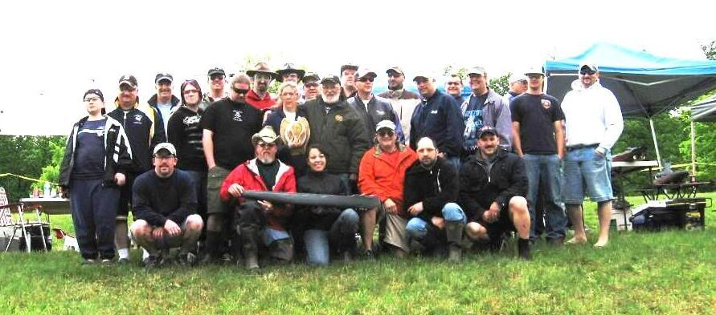

International R/C Warship Combat Club, Inc.
Keeping Ponds Safe since 1978
NE.Spring Regional 2009
Hagerstown, Maryland
Greenbriar State Park, Boonsbouro, MD
We had a grand turnout for the first official battle of the year. About 35 Captains attended the event over the three days is was held. All total there wer 28 sinks (14 Alllied and 14 Axis) Everyone seemed to have a great time and the weather was decent. The southern contingent thought the weather a little chilly but the temps were in the 70's the first day and 60's the next two. Great fellowship and battling was had. We ate good each night also!
